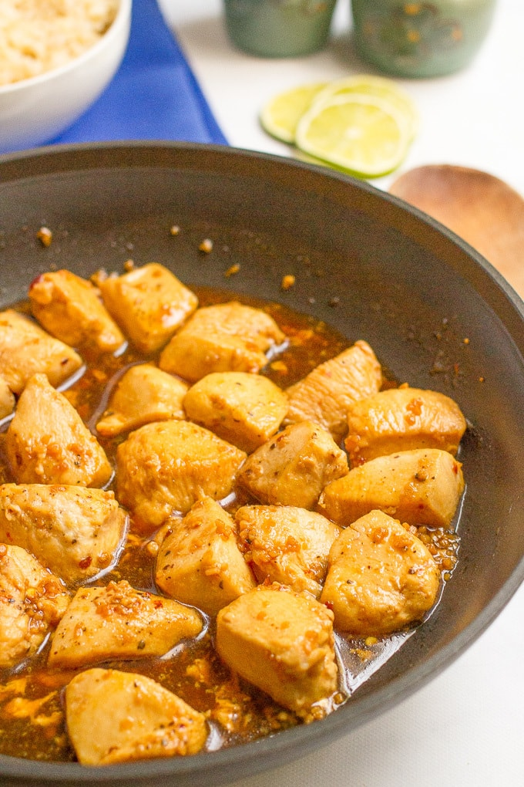

Honey Garlic Chicken

Juicy and tasty chicken that you can make in 15 minutes!
Continuing the garlic theme from the previous garlic bread recipe,
we're now going to look at how to make this amazing honey and garlic chicken.
Ingredients
- 2 tsp. olive oil
- 1 1/2 pounds of boneless, skinless chicken breasts, diced
- Salt and black pepper
- 3 tbsp. honey
- 3 tbsp. low sodium soy sauce
- 3 cloves garlic, minced
- 1/4 tsp. red pepper flakes (adjust to your liking)
Steps
- Heat olive oil in large skillet over medium-high heat.
- Season diced chicken with salt and pepper, (Keep in mind soy sauce will also add sodium.)
- Add chicken to skillet and brown on one side, about 3-4 minutes.
- Meanwhile, make the glaze. Whisk the honey, soy sauce, garlic, and red pepper flakes in small bowl until well combined.
- Add sauce to the pan and toss to coat the chicken pieces. Cook until chicken is cooked through, about 4-5 more minutes.
- Serve with your choice of sides.